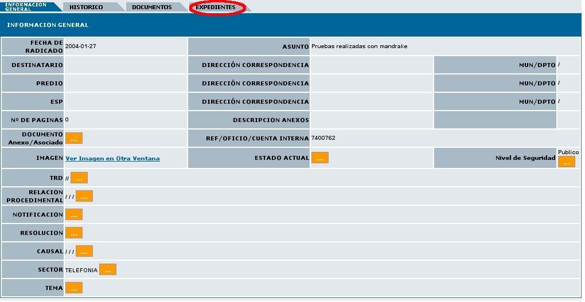

Creación de expedientes en Radicados con Expedientes
Esta funcionalidad permite al usuario asignarle otro expediente a los radicados que pertenecen al expediente. Estos expedientes virtuales se van conformando a medida que el usuario o usuarios incluyen radicados en determinado nombre de expediente, logrando en una sola ventana mostrar todos los documentos involucrados en el mismo proceso y los cuales se encuentran físicamente archivados.
Los expedientes se conforman teniendo en cuenta el año y la dependencia. Cada expediente refleja como se encuentran organizados físicamente los archivos de cada una de las áreas productoras.
Para la
conformación de los expedientes virtuales se debe:
1. Seleccionar la carpeta donde se encuentra el radicado que ya posee un Expediente el cual se quiere incluir en un nuevo expediente:
2. Ingresar al radicado por la fecha de radicación:

3. Dar click en la pestaña Expedientes:

4. El sistema se ubica en la vista de "Expedientes" la cual está compuesta por:

a. Datos Radicado: Indica el numero de radicado con el que se va a trabajar.
b. Nombre de Expediente: Muestra el numero del expediente donde se encuentra actualmente el radicado.
c. Historia del Expediente: Muestra todas las operaciones realizadas al expediente donde se encuentra el radicado.
d. Ver Borrados: Muestra los documentos anexos que han sido borrados del expediente por radicado.
e. Enlace Crear: Nos permite crear un nuevo expediente para el mismo radicado. (Se debe tener en cuenta que para qué este enlace aparezca se debe poseer permiso de creación de expedientes.)
f. Enlace Excluir de: Nos permite excluir un radicado de un expediente determinado.
g.
Enlace Incluir en: Nos permite
incluir este radicado en un expediente
distinto
h. Al dar
clic sobre cualquiera de
los numeros de expedientes este actualiza la pagina con la informacion
de los radicados que se encuentran en el numero seleccionado (La cual
aparece abajo de ver borrados).
i. Enlace “INCLUIR DOCUMENTOS EN EXPEDIENTE”muestra
la pantalla de
permite anexar los documentos necesarios en el mismo expediente donde
se encuentra el radicado.
Crear Nuevo Expediente de un Radicado con expediente:
Para crear un nuevo expediente se da clic en el enlace CREAR donde aparecerá el siguiente cuadro el cual debe ser llenado con la TRD correspondiente a la dependencia del radicado.
Nota: Un usuario solamente puede crear expedientes correspondientes a la dependencia en la cual pertenece.
Si el expediente que se desea crear pertenece a otro año este puede ser modificado al dar clic en la selección del año, los demás números del expediente van a ser anexados automáticamente debido a un consecutivo que se tiene en la base de datos, a menos que se desee colocar este numero manualmente en cuyo caso se debe seguir la siguiente estructura.
|
2006 |
900 |
1001 |
00006 |
E |
|
Año |
Dependencia |
Serie SubSerie |
Consecutivo |
Indica que es un Expediente |
Y
bastara con cambiar los datos en sus respectivos campos. Ademas si se
desea se puede marcar la casilla de Consecutivo de Expediente Manual,
cuando este exista.
6. Paso seguido bastara con colocar la fecha de la creación del expediente ( La cual es la misma que se encuentra en el radicado) y seleccionar el Usuario Responsable del Proceso, para que aparezca el botón de "Crear Nuevo Expediente", y el sistema solicita la confirmación de la creación del expediente.
7. Por ultimo se la da clic en el botón CONFIRMACION CREACION EXPEDIENTE.
El sistema graba los datos del radicado en el cual se encuentra ubicado y al dar clic en CERRAR aparecerá esta información en la vista del expediente, indicando el número creado (el numero indicado en el punto a, más una letra E, que indica Expediente) y los documentos anexos que tiene dicho radicado y que pertenecen a este expediente, así como los expedientes donde se encuentra incluido.

Para todos los radicados que son grabados en un expediente, automáticamente se envia una notificación a las personas de Archivo para que realicen el procedimiento de Archivado físico del documento a cada expediente.
El expediente virtual debe reflejar una fiel copia del expediente físico, por lo anterior, recuerde entregar todos los documentos físicos que se requieran al grupo de archivo correspondiente.